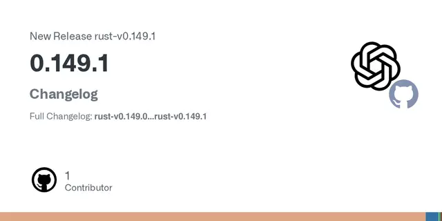

OpenAI / 開発ツール・画像・動画・音声
OpenAI Codex 0.149.1公開、スレッド分類と画像コンテキスト圧縮を改善

OpenAIは2026年8月24日、CodexのRust版「0.149.1」を公開しました。今回の更新は大規模な新機能追加というより、エージェント実行時のスレッド分類、メモリ処理、画像を含む長い会話履歴のコンテキスト管理を改善する内容が中心です。
QUICK READ
この記事の要点
codex execにスレッド分類を追加
0.149.1では、codex exec --thread-source <SOURCEオプションが追加されました。新規作成またはフォークされたスレッドに対し、その実行がどの種類の処理から生まれたものかを明示できます。 指定を省略した場合はuserが既定値になります。また、TypeScript SDKでもthreadSourceとして扱えるようになりました。一方、既存スレッドを再開する場合には、すでに保存されている分類を上書きしません。 この変更は、複数のエージェント処理や自動実行を組み合わせる環境で、実行経路を追跡しやすくする基盤といえます。
画像を含むコンテキスト圧縮をより厳密に
もう一つ重要なのが、remote compactionにおける画像の扱いです。従来の保持メッセージ量の予算計算ではテキストが中心で、画像サイズが十分に反映されないケースがありました。 新たにオプトインのcompactionimagebudget機能が追加され、既存の画像サイズ推定を使って画像も予算として計上できます。 さらに、切り詰め境界にある画像と隣接ラベルを一体として扱い、画像が予算に収まらない場合には古いメッセージを追加で戻さない設計になっています。画像を大量に扱うマルチモーダルなエージェントでは、コンテキスト利用量をより予測しやすくなる可能性があります。
メモリ統合処理の識別も改善
detached memory requestについては、threadsourceにmemoryconsolidationを設定する変更も入りました。 これにより、通常のユーザー操作と、内部的なメモリ統合処理をメタデータ上で区別できます。リクエストヘッダーとclientmetadataにも対応する情報が伝播するようテストされています。
Discord掲載記事からの抜粋です。詳細・文脈は全文と出典をご確認ください。
出典・参考リンク
日付はAFNJPへの掲載日です。発表元の公開日とは異なる場合があります。